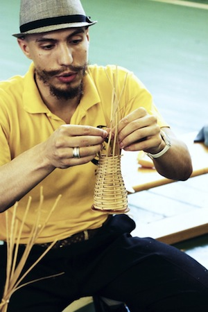

Интервью с Имахом Штефаном (Treinel Ímã, FICA)
Краткая биография
- Имя: Имах М. Игоревич Штефан
- Apelido: Ímã
- Год рождения: 1986
- С какого года в капоэйре: 2004
- Группа: FICA – Moscou, Fundação Internacional de Capoeira
- Направление: Capoeira Angola.
Capoeira Inside (CI): Имах, привет! Как-то местре Cabello гостил у меня дома, мы разговаривали о недавно прошедших мероприятиях, речь зашла про семинар FICA и он сказал, что на семинаре был русский мужик – Ímã и он был крут. С тех пор я хотел познакомиться с этим «крутым русским мужиком». Начнем с традиционного вопроса, расскажи, пожалуйста, о своём пути в капоэйре, как у тебя все началось? Сразу ли это была Капоэйра Ангола, или ты начал с того, что сейчас частенько называют „режионалом“, хотя с режионалом Бимбы мало бывает связан?
Имах Штефан (ИШ): День добрый, Капоэйра Инсайд. О, да, местре Кабело, тот еще крутой бразильский мужик! Кстати, спасибо ему за многое, что он мне смог дать на родах капоэйра. Там было много забавных и важных историй, свидетелями которых мы были с ним. Но это другая история.
Начиналось все более чем банально, а вот продолжалось более чем интересно. В конце 90-х, после кризиса в России народ начал потихоньку отходить и благосостояние населения росло ударными темпами. Так моему лучшему другу подарили на ДР приставку с видеоиграми. И там, как вы уже догадываетесь, была видео игра по боям межразличных боевых искусств. Это первое осознанное, пусть и поверхностное знакомство с Капоэйра. Далее известный фильм «Только сильнейшие»…
Что интересно, в совокупности со своим уличным опытом (район в котором я жил тогда в Москве до сих пор оставляет акцент при его упоминании — Солнцево), и опытом военной школы, я извлек из Капоэйра два приема. Сейчас их можно охарактеризовать как «Armada» и „Chapa de frente“. Так однажды, летом, еще до того как я начал заниматься Капоэйра произошла одна история изменившая мое видение, скажем, самозащиты. Будучи на моей земле обетованной, в родном городе Керчь, за 2 часа до отправления поезда в Москву, мы с моим московским другом боксером и моим двоюродным братом и его девушкой прогуливались поздним вечером. И не вдаваясь в подробности… на моего брата напали недалеко от нашего дома. Пока мой брат защищал свою девушку, мои нелестные отзывы в адрес рослых мужиков вызвали соответствующую реакцию. Дальше было как в фильме. В сумерках, под вопли соседствующих у подъездов бабушек и нецензурную брань, к моему горлу протянулась рука и схватила меня за ворот. От такой наглости я изъял конечность оппонента с горла и услышал как тот прихватил мой нательный крест с цепочкой еще с годовалого крещения. Что собственно побудило меня к более радикальным методам. После чего я отшагнул назад для расчета дистанции, одарил недоброжелателя прямым ударом ноги в область человека, (на самом деле там было очень темно, кто был в Крыму поймет) и полученной дистанции хватило для высокого удара с разворота. Там уже бабушки сделали свое и уволокли обидчиков под предлогом вызвать милицию. Но пока их волокли, я услышал в свой адрес от обидчиков одну интересную фразу: «Понаехали тут, каратисты». Как сейчас помню, у меня в голове стоял ответ: «Ха, это Капоэйра!». Конечно же степень нанесения увечий хулигану я смог оценить только в поезде на своем белом кроссовке. Что произвело на меня дополнительное впечатление от этих элементов Капоэйра.
Буквально в том же году, я начал искать Капоэйра в Москве, и уже знал, что буду этим заниматься. Но увы, тогда была только одна группа, и тогда занятия стоили 2000р. в неделю. Будучи студентом, я не мог этого себе позволить. И оставил затею до лучших времен, не оставив при этом элементы Капоэйра. Через несколько лет, в конце 2003, мы с моим другом договорились чем-нибудь заняться. И заключили пари, кто первый что найдет туда и будем ходить. Через день я ему перезвонил и сказал, что я нашел группу Капоэйра, а он сказал что нашел Кэндо, но я был первым кто оповестил и тогда мы решили пойти на Капоэйра. Тогда я нашел через интернет уже 3 группы, в числе которых был сайт Светы Пастуховой и ее группы „Self Training Group“. Тогда на сайте я увидел еще одно словосочетание Капоэйра Ангола, но для меня тогда это не сыграло никакой роли. Ознакомившись с описанием и вступив в краткую переписку со Светой я выяснил, что тренировка стоит всего 50р. (по сравнению к ценам в других школах это было очень демократично) и зал находился ближе всего к моему дому. Так я пошел со своим другом на первую тренировку Капоэйра Ангола. На тот момент Света уже бывала на семинарах Капоэйра Ангола в Европе и в Бразилии и уже определилась с направлением и «выбором» мастера.
Где-то через пол года моей Капоэйра мы пошли группой на рода в гости, и я увидел иную Капоэйра, о которой мне говорила мой тренер. После той рода, она меня спросила: «Ну, как?», и я ответил: „…рад что занимаюсь Капоэйра Ангола“, так как на тот момент мы гораздо больше современников уделяли внимание взаимодействию, пению и музыкальным инструментам. Полагаю, что то сравнение и началось моей отправной точкой в осознании себя Анголейро.
Говоря о Капоэйра Режионал, я могу сказать только одно: я имею представление о том, что это такое, но никогда не занимался им, как в прочем и современной Капоэйра Контемпоранья.
Да, согласен. Сейчас среди последователей той Капоэйра Режионал, что заведовал Бимба, остались единицы мастеров, которых можно пересчитать по пальцам одной руки.

CI: Забавная история, и правда, как в кино! Можешь поведать нам об истории капоэйры в России? По крайней мере, с твоей точки зрения как она зародилась у нас? Кто был первым? И где все началось?
ИШ: О! Я люблю этот вопрос. И отвечаю всегда на него одной историей которая ломает в корни наше, Российское, представление о начале истории появления Капоэйра в России. Официальная, как мы помним, это появление Капоэйра в России благодаря клубу ИНБИ в далеком, 1995 году.
Но этот случай перевернул мое представление о Капоэйра в России, да и в СССР.
Как-то в середине двухтысячных, я ехал с тренировки вечером домой. От метро я жил в 30 минутах пешком, по этому иногда опаздывая на последнюю маршрутку, ловил машину. Поймав заветную, бросил свой чехол с беримбау на заднее сидение вместе с сумкой и сел вперед. После первых минут молчания, большой седовласый грузин не выдержал и спрашивает: «А что это у вас такое в чехле?». Этот вопрос, я полагаю, у всех капоэйристов вызывает бурные эмоции, что ответы от случая к случаю разнятся от правды до ереси. В тот момент, я подметил что водитель не сделал никаких предположений и сказал ему правду без доли шутки: «Это беримбау». После полуминутного молчания, что является абсолютной нормой после произношения неведомого слова, он спросил: „А вы занимаетесь капоэйрой?“. Здесь я уже попал в оцепенение с улыбкой на глазах… И далее он поведал мне историю, как то ли в 85-м, то ли в 86-м году он подпольно занимался Капоэйра в группе и преподавал им некто Али. И что тот учил их играть на музыкальных инструментах, петь, делать жинга и различные удары и уходы. Сказал, что у него даже где-то белые штаны остались. Но потом, тот загрустил, после моего вопроса «А почему же перестали заниматься?». Он поведал, что как-то на Али напали на улице из-за его смуглой кожи и в ходе потасовки он убил одного из нападавших. Потом его посадили в советскую тюрьму, а там и не сложно догадаться, что было с иностранцами преступившими закон в советское время. С тех пор, он сказал, что ничего о нем не слышал. А так, как они занимались подпольно, никто не взял на себя ответственность по сохранению группы.
CI: Спасибо за уникальную историю про грузина-таксиста и Али, теперь её узнают еще больше людей! Предыдущий вопрос мы задавали и будем задавать представителям разных школ и групп, т.к. часто люди видят историю по-разному. Тебя же хотели еще раз расспросить про Капоэйру Анголу в России? Догадываюсь, что она пришла позже, чем современные направления.
ИШ: По официальной истории, за исключением истории сказанной ранее, Капоэйра Ангола появилась в России благодаря опять таки первому семинару ИНБИ. Было это вроде в 96-м. Тогда на ряду с мастерами современной Капоэйра и Режионал, были и мастера Капоэйра Ангола, такие как Местре Но и Местре Браулино. Так что официально были представлены все стили Капоэйра в России единовременно. Но вот формирование групп по стилям это другой вопрос. Кстати о группах, спустя некоторое время, после того семинара в 96-м, где-то в восточной части Украины появилась через некоторое время группа Капоэйра Ангола Палмарес. По крайней мере, что мне известно, они себя так называли и использовали соответствующий логотип. Что с ними сейчас, одному Богу известно. Говоря о России, конечно потом появились люди которые начали осознавать что есть что-то в Капоэйра иное и более фундаментальное.
Наша группа была первой представляющей Капоэйра Ангола. Это было в 2002-2003 годах, после того как Савета (Светлана Пастухова), о которой я уже рассказывал, съездила в Европу на семинар организованным Местре Розалво (на тот момент контра-местре) при участии Местре Жоао Гранди, Местре Жоао Пекено, Местре Мораес и Местре Кобра Манса. Где собственно она и познакомилась c нашим Местре Кобринья. Но основное формирование произошло только в 2003 году.

CI: Пара уточняющих вопросов. Интересно, как анголейро (в частности ты) воспринимают группу Capoeira Angola Palmares, вроде бы они держатся, как-то особняком и довольно сильно отличаются от других школ Капоэйра Ангола (система поясов, довольно высокая игра и т.д.)?
ИШ: Спокойно. Так как для меня все, что есть в капоэйра – это и есть капоэйра. Пусть и своя, пусть и иная и порой совершенно отличная. Пусть кто-то ввел в свою группу пояса по примеру восточных единоборств, хотя идея с шейными платками мне больше нравится… Глобализация как есть. А в целом не группа и не стиль держится особняком, а политика руководства группы, или непосредственно человек ей управляющий. Говоря, о личных отношениях, проф. Нозиньо мне хороший друг и не могу сказать обратного. А говорить о стиле и высоте игры — это последнее дело когда это ставят в причины различий. Меня к примеру всегда забавляют капоэйристас, которые говорят что сейчас они будут играть режионал, а вот сейчас ангола, а вот теперь бенгела. Это же сколько надо внимания уделять тому что надо сейчас, в настоящий момент играя в рода? По мне так, что в рода устроенной анголейрос, или режионал, или контемпоранья, да или просто уличной, я все равно буду играть так как научил меня мастер. Под каждый тип дождя зонтов не напасешься.
Есть еще один момент, мир знает только верхушку айсберга КА. И даже большую ее часть постичь только одной поездкой в Салвадор невозможно. Существует так много различных школ в рамках КА, по технике, по традициям, по типу игры, по манере ведения рода, что и не счесть. Да стоит только вспомнить, что до наших времен сохранились представители 9-10 линий КА, мастера которых практиковали в начале 20 века, и это только что нам известны сегодня. А так же если говорить в частности, к примеру Местре Мораес. Он выпустил более 20 мастеров, 90% которых и сейчас преподают капоэйра. И если мы будем рассматривать каждого из них, их игру и манеру исполнения, то ни один непохож на другого.
Как говорит, Местре Кобринья «Слава богу, что у нас в ФИКА, все мастера непохожи друг на друга. И каждый может себе выбрать по вкусу с кем заниматься и быть чьим учеником». Но при этом традиции у нас одни, их мастер один и в этом есть мы. Каждый находит себя сам, а мастера учат этому поиску. Каждый может делать жинга, как ему нравится, лишь бы она была защищенной и не на прямых ногах. Поэтому, я люблю КА, она учит тебя открывать себя и быть уникальным.
CI: Как ты считаешь, высок ли уровень Анголы в России? И где, кроме Бразилии, она еще на высоком уровне? Например, я слышал что в Финляндии какое-то потрясающие количество школ анголы.
ИШ: Я считаю, что нет. Пока у нас все на стадии формирования. Из других стран могу отметить только Германию – наверное второе место после Бразилии, по количеству групп и проживающих там постоянно мастеров Капоэйра Ангола.
CI: Многие группы современной капоэйры большое значение уделяют занятиям анголы (ну, или по крайней мере пытаются), играют низко, учат шамады, ладаиньи, устраивают переодически roda de angola, и т.д. Что ты думаешь об этом? Хорошо ли это или плохо? Играл ли ты с такими „перевертышами“ и как бы ты оценил их уровень в среднем (уровень поддержки диалога и игры Ангола)?
ИШ: Я частично дал ответ в предыдущем вопросе. Но могу добавить. Изучать свою историю — это не плохо. Это очень хорошо. И мало изучать, надо знать. Как сказал однажды Местре Биго, ученик Местре Пастинья: «Капоэйра Ангола — это Королева, а капоэйра Режионал — это принцесса. Принцесса может не любить свою мать, а мать в ответ все равно будет любить свое дитя».
Я за то, чтобы люди практикующие другие стили капоэйра изучали КА. Возможно тогда, когда уровень образования будет выше, капоэйристас будут меньше «играть низко», „играть медленно“, «играть жеманно», «играть в ангола». Тогда они возможно просто поймут, что диалог и взаимодействие наряду с традициями и есть КА.
Оценивать уровень, „перевертышей“, как вы их назвали, я не вправе. Мне и моих учеников хватает. Кстати, среди которых многие пришли из других групп.

CI: Смотря на историю развития капоэйры в России, да и читая книги об истории капоэйры в Бразилии и в мире, часто видишь, что развитие сопровождается расколами групп, уходами мастеров и учеников в новую группу и т.д. Как ты думаешь, связанно ли это как-то с бразильской ментальностью, или скажем эгоизмом отдельных капоэйристов? В общем, интересно, почему это происходит, по твоему мнению?
ИШ: Там где кто-то умирает, кто-то обязательно рождается. Но можно умереть от старости, а можно от убийства.
Есть в некоторых группах, и у отдельно взятых мастеров правило: стал мастером, решай будешь ли ты со мной в одной группе или откроешь свою, новую школу. Раньше, в начале и вплоть до 3-й четверти 20-го века, все мастера «выпускали» своих новоиспеченных мастеров на все четыре стороны. Это было принято. Сейчас же большинство придерживаются своей группы и по получению звания остаются, так как групп очень много по всему миру и можно быть в месте ничего не делив. Но основной причиной ухода и распада, всегда останутся человеческие разногласия, за исключением тех групп где традиция «выпуска» мастера сохранилась.
CI: Что отличает российскую капоэйру от остальной (Европейской, Бразильской, Американской и, возможно, Израильской)?
ИШ: Полагаю, что языком, на который переводят песни ученикам… Я конечно понимаю к чему вопрос. О разнице в менталитете, истории и традициях. Но после того как одному „русскому“ дали звание Треинел, я напрочь уверовал в то, что все дело в степени глубины понимания и стремления. И все.
CI: Что изменилось с тех пор, как ты начал изучать капоэйру?
ИШ: Ничего особенного. Только вот, женился на капоэйристке; круглосуточно напеваю что-то на португальском; понимаю, что если упаду, то знаю как буду выкручиваться; все опасности воспринимаю как игру; кот делает мортал; мама знает пару приемов Капоэйра и делает жинга; друзей по миру появилось столько, что жуть; в различных потасовках, что подбрасывает жизнь я даже не задумываюсь, что делать, тело уже все умеет и знает; а вот, чему я особенно рад – будучи первый раз в Бразилии я осознал, как я люблю Россию. И я очень ценю то, что благодаря Капоэйра, помимо путешествий по миру, у меня появилась возможность путешествовать по России и странам СНГ, когда различные группы зовут провести семинар. Ведь самому-то не так просто взять и организовать себе отпуск, к примеру, в Челябинск. Вот, в общем-то, и все.
CI: Что капоэйра поменяла в твоей жизни?
ИШ: Здесь какой-то подвох?

Блиц-опрос
Некоторые простые и не очень вопросы, которые не попали в большое интервью, но возможно помогут читателям лучше узнать тебя. Пожалуйста, отвечай быстро и, если возможно, односложно ;)
• Лучшее apelido? — Когда его нет?
• Местре? (Если местре, то кто?) — Кобра Манса и Местре Мораес
• Капоэйрист? (Лучший по твоему мнению) – Я пока не успел со всеми познакомиться.
• Певец? (Лучший голос капоэйры) – Мне нравится, как поет Местре Фелипе из Санто-Амаро, особенно в живую.
• Песня? – Уйма. Мне в голову сразу 3 пришло: «A maré subiu», «A onça te pega Maria», „Se ioiâ quiser me ver, eu vou“.
• Ритм беримбау? (Любимый) – Есть одна из вариаций: тон, чи-тон, чи-тон тон, чи-тон, чи-тон тон. Она может исполняться как ритм непродолжительное время если ее подхватят остальные беримбау. Это нечто.
• Удар? – Если говорить об атаке, здесь их три: Рабо ди Аррая, Кабесада и Раштейра.
• Фраза/Цитата – A coisa mais fáçil na vida – é a rendição.
Без капли юмора,
Треинел Има, ФИКА.
Вопросы задавал Chupa Teta.
Предыдущие интервью из серии «Капоэйра в России»:
— Интервью с Александром Рогозиным (Prof. Ninja, Real Capoeira)